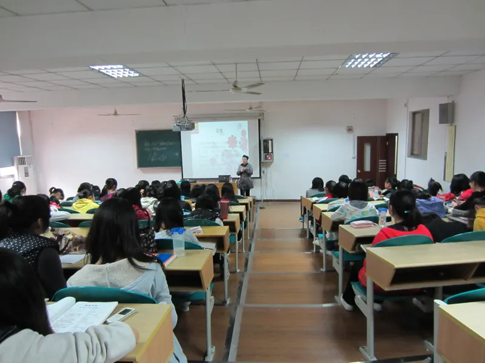
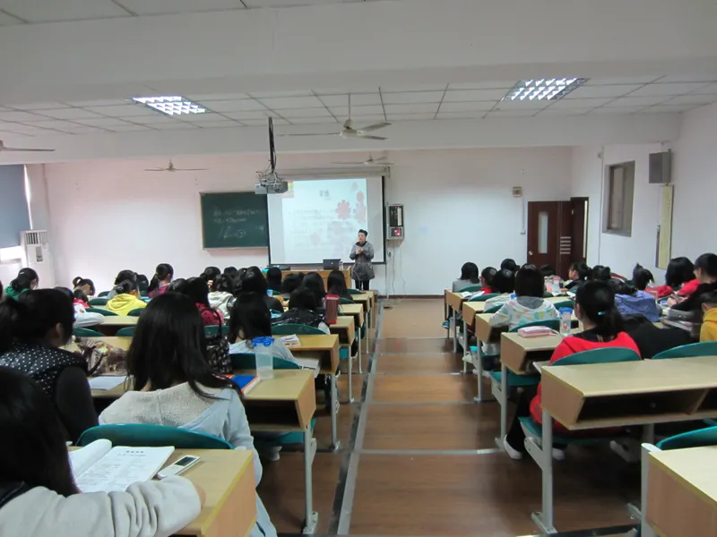

| Description |
This course plays a vital role in understanding the content of other school subjects. It can cultivate our logical thinking, the ability to analyze things, and can be applied to solve some practical issues in life. |
This course is a basic course, which includes five parts: listening, speaking, reading, writing, and translation. Through the study of this course, college students can communicate effectively in English in future study, work and social interaction, and at the same time enhance their autonomous learning ability. |
This course can cultivate the enthusiasm of students to participate in exercise, so that they can consciously, actively and often participate in exercise, and achieve the goal of physical exercise participation, thereby enhancing their physical fitness. |
This course can stimulate the self-awareness of college students' career development, establish employment concept, and promote college students to attach importance to their study and life at the university stage. |
This course enables college students to understand how to properly deal with personal emotions, interpersonal relationships, romantic relationships, career planning and other issues during college. |
This course allows college students to learn some programming languages. And learn from the data structure, operating system and microcomputer principles, so as to improve the abstract thinking ability of college students. |
 
